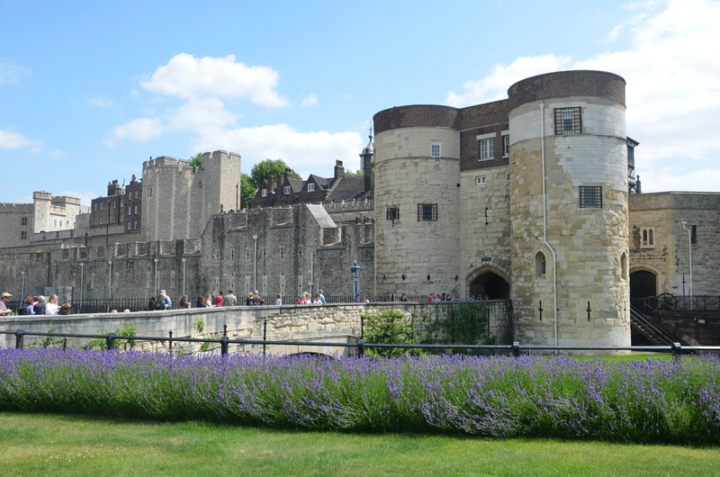
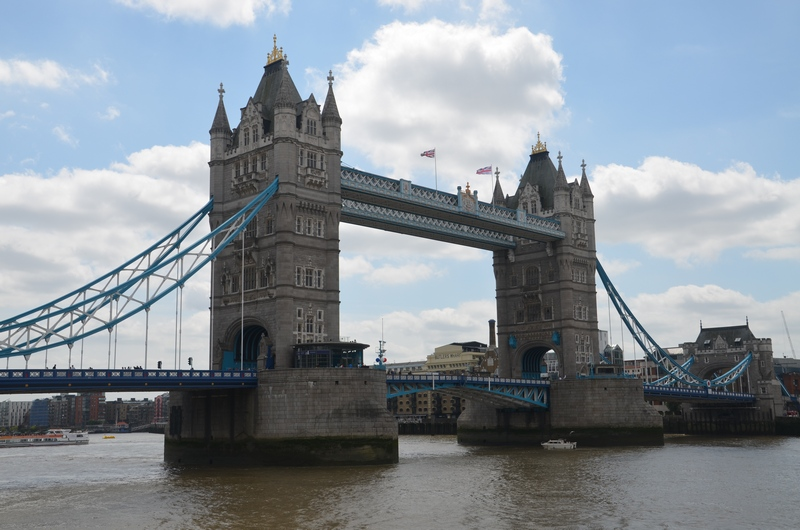
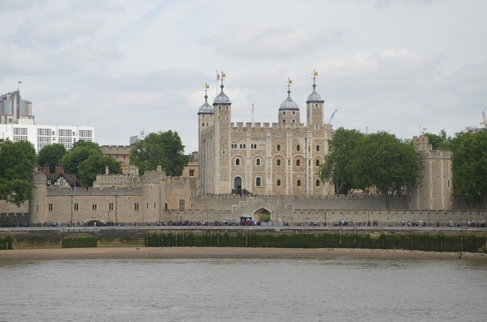
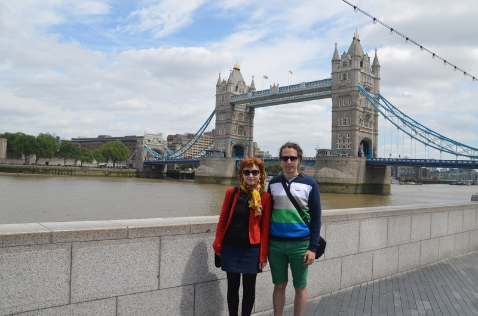
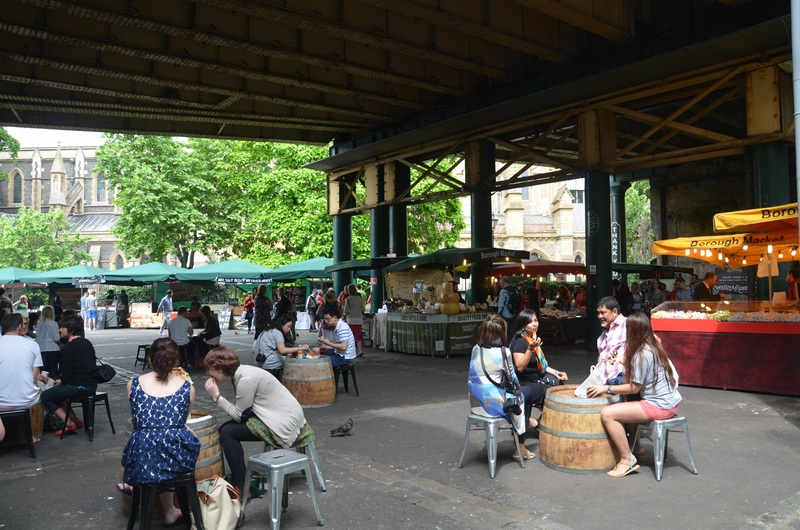
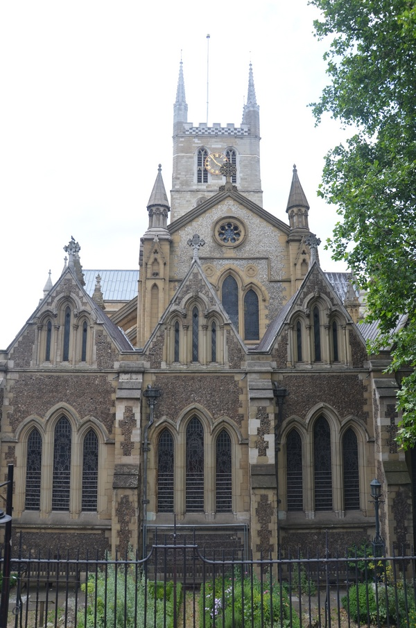
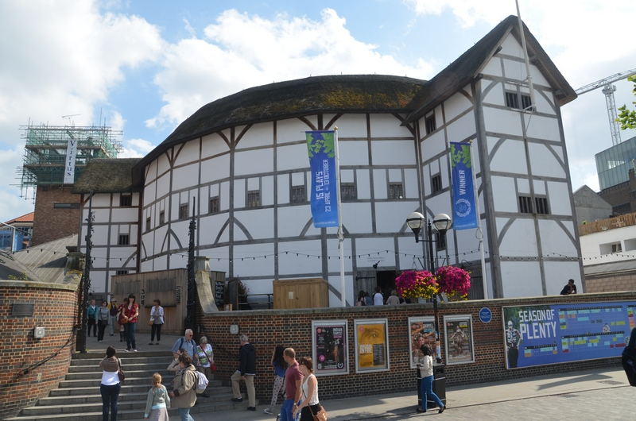
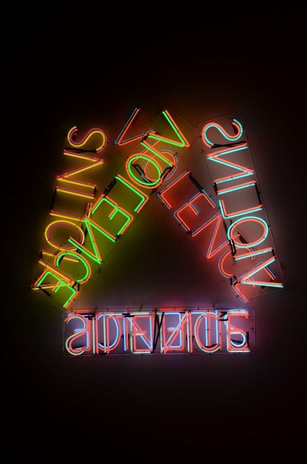
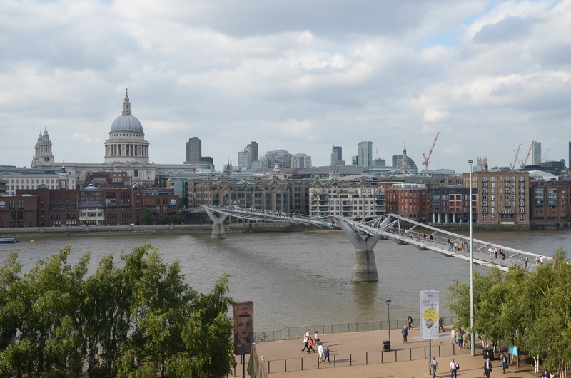

Následujícího rána vedly naše první kroky do banky na Earl’s Court Road. Záhy po příjezdu do Londýna jsme totiž zjistili, že jsme doma nafasovali staré britské bankovky a modlili jsme se, aby nám je v bance vyměnili. Naštěstí to nebyl vůbec žádný problém a během pár minut jsme odcházeli s aktuální měnou :-). Poté už jsme se vydali rovnou na metro na Tower Hill. Při této cestě jsme pochopili, co je pravdy na tom, že obyvatelé Londýna na své metro věčně nadávají. Na Tower Hill jsme jeli snad hodinu (přitom je to pořád centrum města) - metro za každou druhou zastávkou stálo někde v tunelu. Šumějícím zprávám z rozhlasu jsme moc nerozuměli, takže nezbývalo než doufat, že k Toweru nakonec šťastně dorazíme. Pohled, který se před námi otevřel hned poté, co jsme vylezli zpátky na světlo, ale za všechna ta příkoří rozhodně stál.

Tower
A co teprve Tower Bridge - další londýnská dominanta stojící hned opodál. Překvapilo mě, jak je modrý - to mi z fotek nikdy nepřišlo :-). Je nádhera vidět ho na vlastní oči.

Tower Bridge
Trochu mě mrzí, že jsem u Toweru viděla jenom jednoho krkavce (a kdoví, zda to vůbec byl ten pravý) :D! V okolí pevnosti se hodně staví a mně osobně se příliš nelíbí budovy, které v její blízkosti vyrostly. Byť je Swiss Re Tower jistě impozantní, vedle historického Toweru působí trochu jako pěst na oko a strhává na sebe veškerou pozornost.

Pohled z druhého břehu Temže
Poté, co jsme přešli Tower Bridge, dostali jsme se na proslulé “korzo” Queen’s Walk. Při cestě okolo Temže jsme minuli válečný křižník Belfast, který dnes slouží jako muzeum.

Tower Bridge a my
Mezitím už jsme dostali docela hlad a začali jsme přemýšlet, kam se půjdeme najíst tentokrát. Jako předkrm jsme si dali jeden cheese u Mekáče (trestuhodné, ale nechtěli jsme hledat s úplně prázdným žaludkem) a nakonec se nám podařilo objevit Borough Market - úžasné místo přímo u Southwark Cathedral. Najdete tu spoustu stánků s lákavými dobrotami - od sýrů, sladkostí a uzenin až po sendviče a nápoje. Neodolali jsme a každý jsme si dali jeden kebab - Péťa s jehněčím a já vegetariánský s tofu. Oba byly obrovitánské a báječné a ještě jsme k nim každý dostali lízátko :-).

Borough market
S plným žaludkem jsme se vydali na prohlídku Southwark Cathedral. Hned na úvod nás příjemně překvapila sympatická babi, která nám u vchodu nabídla povídání o katedrále v našem rodném jazyce :-). Chrám je moc hezký, ale bohužel je zakázáno fotit v interiéru. Jeho zajímavostí je třeba Harvardská kaple, pojmenovaná na počest zakladatele americké univerzity - Johna Harvarda, který byl v kostele Southwark v roce 1607 pokřtěn :). V katedrále se nachází také památník Williama Shakespeara… a naše další kroky nevedly nikam jinam než směrem ke Globe Theatre.

Southwark Cathedral

Globe Theatre
V Globe se mi strašně moc líbil obchod se suvenýry - až je mi teď skoro líto, že jsem si tam nic nekoupila :-). Trička i další předměty s hláškama ze Shakespearových her a hlavně knížky, spooousta krásných knížek pro děti i pro dospělé. Shakespeare na milion způsobů, komiksy ale také krásné ilustrované knihy o Londýně. Určitě bych tam vydržela mnohem dýl, ale chtěli jsme se ještě podívat do sousední Tate Modern. Ta zavírá, jako většina zdejších muzejí, v 18:00, takže nám na prohlídku zbývala už jen hodina času. I tak jsme si to tam ale užili a zbytek si necháváme na příště :-).

V Tate Modern
Prošli jsme se po slavném Millennium Bridge na protější břeh, kde stojí St. Paul’s Cathedral. Její návštěvu jsme se rozhodli nechat na následující den, protože už jsme byli docela unavení, a tak jsme se vydali na metro zpátky do hotelu.

Millennium Bridge se St.Paul’s Cathedral
Večer jsme vyrazili na nákup do nedalekého Tesca - pro redukci. Nějak nás totiž při plánování cesty nenapadlo, že v Anglii mají trochu jiné zásuvky a mobily se nám vybily už druhý den. Naštěstí se nám podařilo redukci bez problémů sehnat a k tomu také vínečko, pomazánku z cizrny a balení muffinů na snídani. Jídlo jsme si tu vážně užívali :-)! S touto výbavou jsme byli dokonale připraveni na báječný večer i následující den, který jsme se rozhodli strávit v Greenwichi.